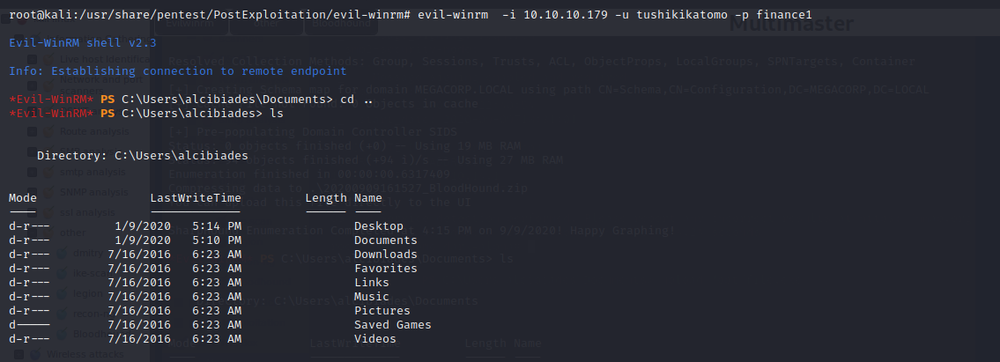

Bloodhound
BLOODHOUND
Introduction
what is bloodhoud? it
is an application used to visualize active directory environments.
Mainly used on engagements to identitfy different attack paths in Active Directory (AD) This encompasses access control lists (ACLs),Users,Groups,Trust relationships and Unique AD objects.
BloodHound was released as a free and open source tool at DEF CON 24.
• It
is a single page Javascript web application, built on top of Linkurious, compiled with Electron, with a Neo4jdatabase fed by a PowerShell and c# ingestor.
Your probably wondering what ACLs(Access control lists)
Access Control List
(ACL) is a set of rules that is usually
used to
filter network traffic. ACLs can be configured on network devices with packet filtering capatibilites, such as routers and firewalls.
How does BloodHound work • It works by using graph theory to find the shortest path for an attacker to traverse to elevate their privileges within the domain.
• Graph theory in mathematics
,is the study of
graphs
, which are mathematical structures used to model pairwise relations between objects.
• Bloodhound collects data by using an ingestor called Sharphound. It comes as a regular command-line .exe or powershell script .When the sharphound is executed it collects all the information it can about ActiveDirectory(AD) and its users,computers and groups. It even collects information about active sessions, Ad permissions and lots more by only using the permissions of a regular user.
• After which the data comes out as a JSON file that is then fed into the Neo4j database and later visualized by the GUI.
with Bloodhound you can;
gain deep insights into AD Enviroment.
know precisely which computers any user has admin rights
know which users effectively have admin rights to any computer
The most exciting feature of BloodHound is its ability to identify attack paths.
Setting up Bloodhound in Kali LinuxInstallling bloodhound in kali linux is quite easy;
Install Java
Update your sources.list using the following command.
echo "deb http://httpredir.debian.org/debian stretch-backports main" | sudo tee -a /etc/apt/sources.list.d/stretch-backports.listupdate your system using the following command
sudo apt-get updateNeo4j will automatically pull from that repo when it needs to install java as part of its install process.
Install neo4jadd noe4j repo to your apt sources using the following commad.
Install apt-transport-https with apt
apt-get install apt-transport-httpsi already have it installed.
now install neo4j community edition using apt
sudo apt-get install neo4ji already have it installed too.
run neo4j as a console application using the following commands.
cd /usr/bin && ./neo4j consoleYou can also start it using sytemctl
systemctl start neo4jNow open the following link access the web console
https://localhost:7474/Authenticate using the following credentials
username neo4j
password neo4j
Now your promopted to change the password
After that is complete you should now be connected.
Download the latest bloodhound verison
After downloading bloodhound unzip it using the following command.
unzip BloodHound-linux-arm64.ziptype the following command to start bloodhound.
cd BloodHound-linux-x64
./BloodHound --no-sandboxlogin to neo4j using the credentials you setl
Username: neo4jPassword: Evil win-rm
How to setup Evil-winrm(Evil windows remote mangament)winRM
is the Microsoft implementation of WS-Management Protocol
.
A standard SOAP based protocol that allows hardware and operating systems from different vendors to interoperate. Microsoft included it in their Operating Systems in order to make life easier to system administrators.
Installation run the following commads.
git clone https://github.com/Hackplayers/evil-winrm.git && cd evil-winrm/ the syntax to use evilwinrm is quite simple.
evil-winrm -i (target ip address) -u (username) -p (password) ill be using evilwinrm to collect data on a box i was doing.
evil-winrm -i 10.10.10.179 -u tushikikatomo -p finance1 Collecting the data
Gain a connection to the box using evil-winrm
upload the sharphoud to your target machine.
and execute it
then download the zip file and load it to bloodhound.
analyzing the zip fileNow you can select the querie you want to run and the domain to execute and you will get the data back on the graph.